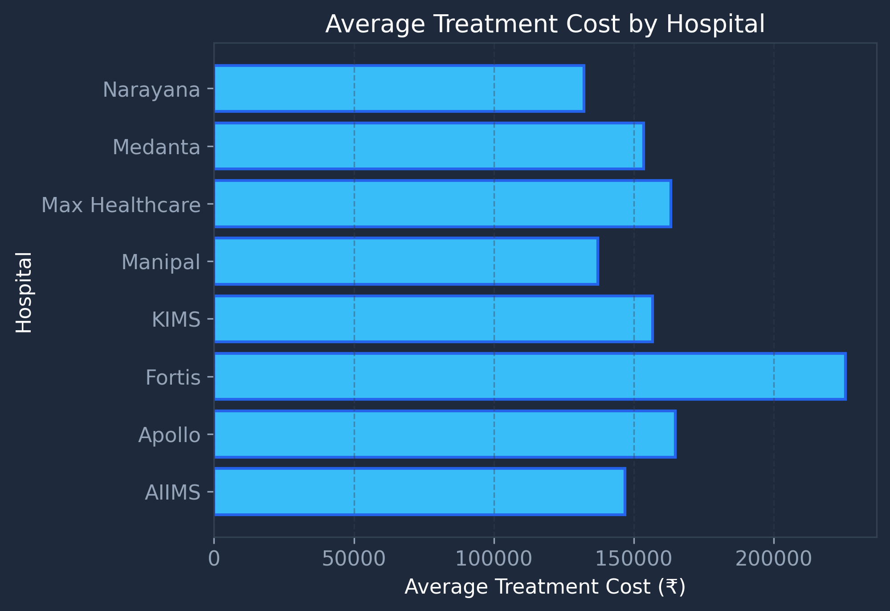
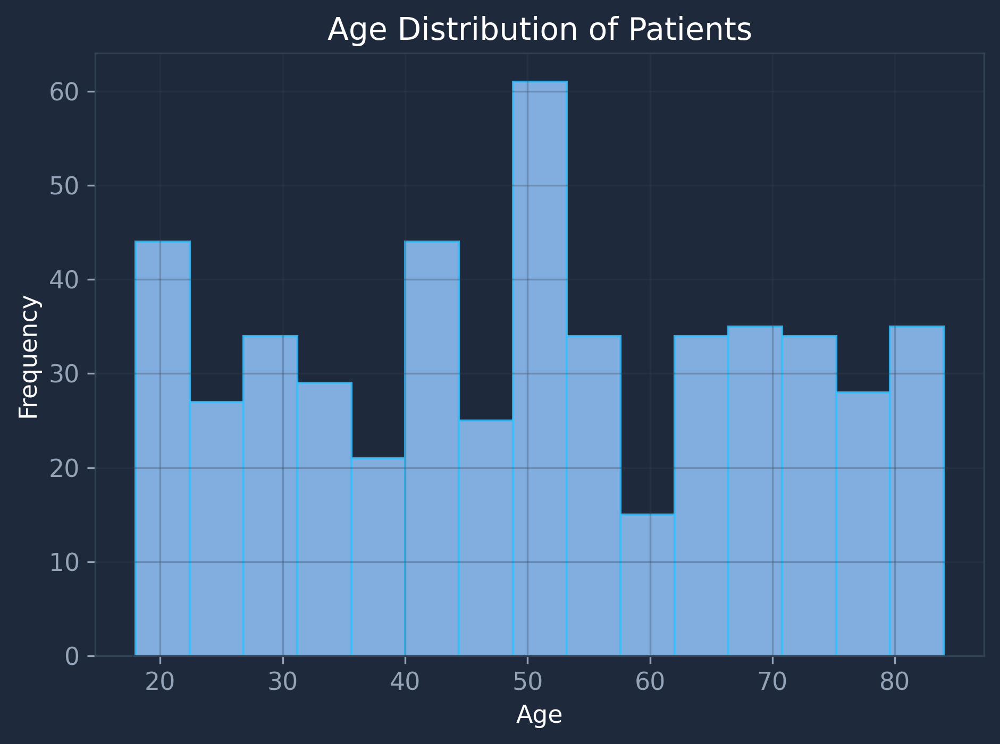
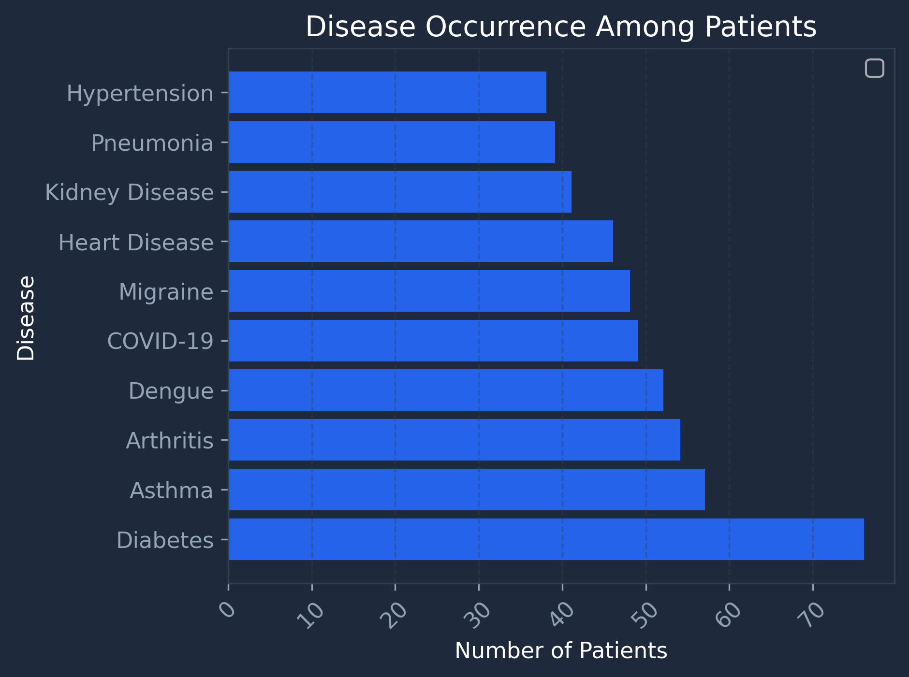
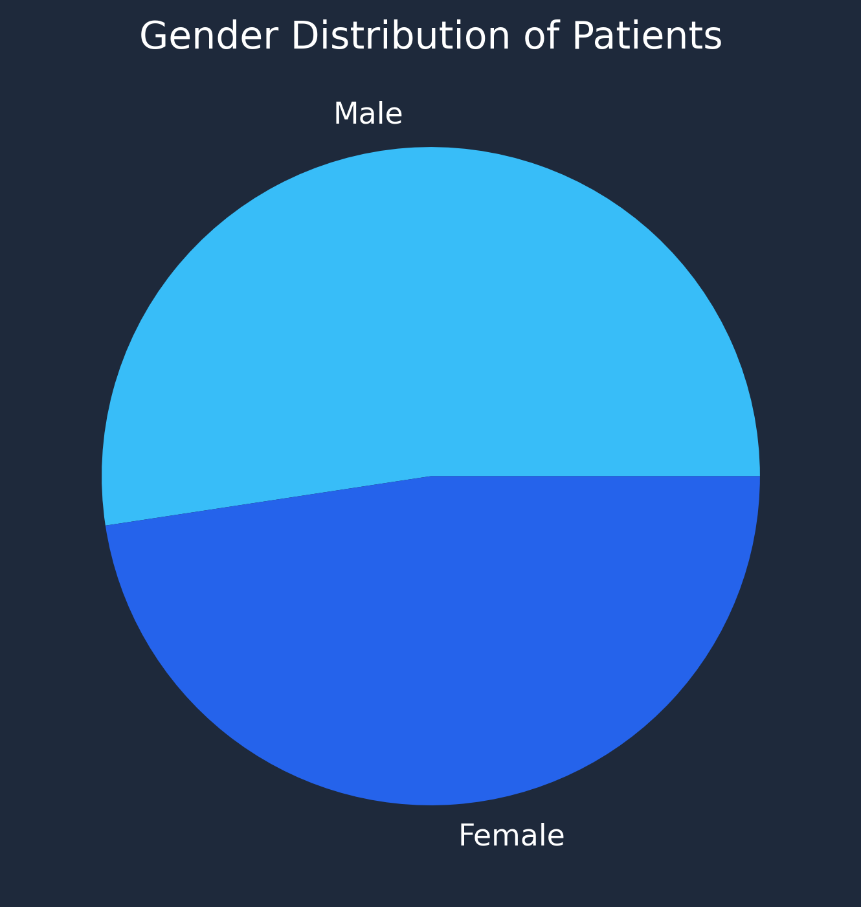

End-to-end healthcare data analysis involving data cleaning, preprocessing, exploratory data analysis and visualization using Python, Pandas, NumPy and Matplotlib.
| Column | Missing Values | Method Used | Reason |
|---|---|---|---|
| Disease | 16 | Mode | Preserves the most common disease category. |
| Age | 27 | Median | Median is resistant to outliers and represents a typical patient. |
| Hospital | 11 | Mode | Most common hospital was used to preserve records. |
| Treatment Cost | 20 | Median | Medical costs contain extreme values, making median more reliable. |
| Recovery Days | 15 | Median | Prevents unusually long recoveries from skewing analysis. |
| Duplicate Records | 20 | Removed | Improves data quality and prevents duplicate counting. |

Average Treatment Cost by Hospital

Age Distribution of Patients

Disease Occurrence Among Patients

Gender Distribution of Patients
Max Healthcare recorded the highest patient volume with 78 admissions.
The average treatment cost across all patients was ₹160,808.
Male patients accounted for 262 admissions while female patients accounted for 238.
Average recovery duration was approximately 28.15 days.
20 duplicate records were removed and missing values were handled using imputation.
Median was used for numerical columns and mode was used for categorical columns.